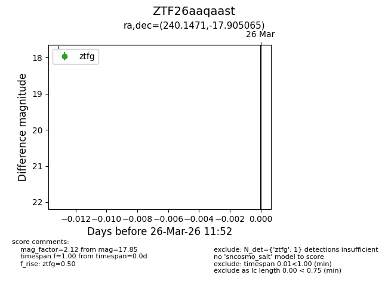
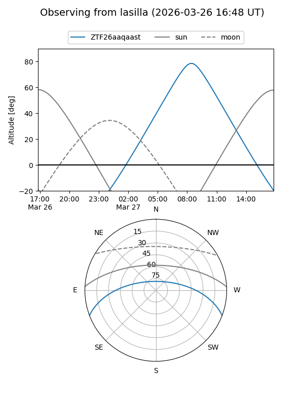
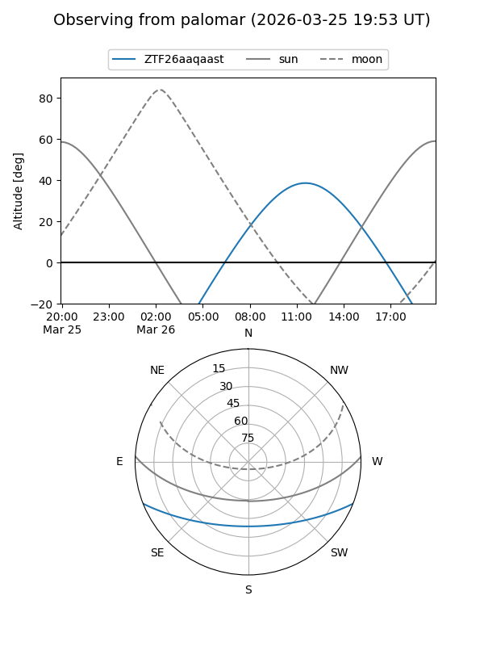

ZTF26aaqaast
Target ZTF26aaqaast at 2026-03-26 11:56
Aliases and brokers:
FINK: link
Lasair: link
ALeRCE: link
alt names
ZTF26aaqaast (ztf,fink_ztf)
Coordinates:
equatorial (ra, dec) = 240.1471,-17.90507
equatorial (HMS+DMS) = 16:00:35.31,-17:54:18.23
galactic (l, b) = (353.8452,+25.73874)
Flags:
Photometry:
last ztfg=17.85
1 ztfg detections
Lightcurve

Visibility


Additional plots